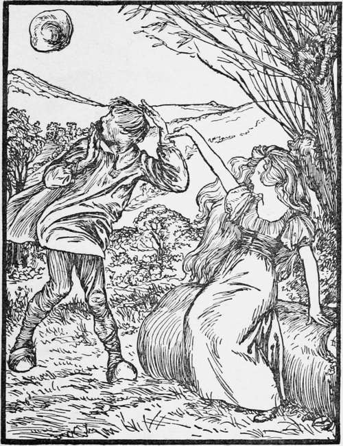

The Goose Girl. Continued
Description
This section is from the book "Household Tales by Brothers Grimm", by Brothers Grimm. Also available from Amazon: Household Tales by Brothers Grimm.
The Goose Girl. Continued
Sadly, sadly, would she rue it."
Then they went out of the city, and drove the geese on. And when she came to the meadow, she sat down upon a bank there, and let down her waving locks of hair, which were all of pure silver; and when Curdken saw it glitter in the sun, he ran up, and would have pulled some of the locks out, but she cried—
"Blow, breezes, blow!
Let Curdken's hat go! "Blow, breezes, blow! Let him after it go! O'er hills, dales and rocks.
Away be it whiel'd, till the silvery locks
Are all comb'd and curl'd! "
Then there came a wind, so strong that it blew olt Curdken's hat; and away it flew over the hills: and he was forced to turn and run after it; till, by the time he came back, she had done combing and curling her hair, and had put it up again safe. Then he was very angry and sulky, and would not speak to her at all; but they watched the geese until it grew dark in the evening, and then drove them homewards.
The next morning, as they were going through the dark gate, the poor girl looked up at Falada's head, and cried—
"Falada, falada, there thou hangest!" and it answered—
"Bride, bride there thou gangest!
Alas, alas! if thy mother knew it,
Sadly, sadly, would she rue it."
Then she drove on the geese, and sat down again in the meadow, and began to comb out her hair as before; and Curdken ran up to her, and wanted to take hold of it; but she cried out quickly—
"Blow, breezes, blow!
Let Curdken's hat go! "Blow, breezes, blow! Let him after it go! O'er hills, dales and rocks.
Away be it whiel'd, till the silvery locks
Are all comb'd and curl'd! "
Then the wind came and blew away his hat; and off it flew a great way, over the hills and far away, so that he had to run after it; and when he came back she had bound up her hair again, and all was safe. So they watched the geese till it grew dark.
In the evening, after they came home, Curdken went to the old king, and said, "I cannot have that strange girl to help me to keep the geese any longer." "Why?" said the king. "Because, instead of doing any good, she does nothing but tease me all day long." Then the king made him tell him what had happened. And Curdken said, "When we go in the morning through the dark gate with our flock of geese, she cries and talks with the head of a horse that hangs upon the wall, and says—
"Falada, falada, there thou hangest!" and the head answers,—
"Bride, bride there thou gangest!
Alas, alas! if thy mother knew it,
Sadly, sadly, would she rue it."
The true Princess and Curdken.
And Curdken went on telling the king what had happened upon the meadow where the geese fed; how his hat was blown away; and how he was forced to run after it, and to leave his flock of geese to themselves. But the old king told the boy to go out again the next day: and when morning came, he placed himself behind the dark gate, and heard how she spoke to Falada, and how Falada answered. Then he went into the field, and hid himself in a bush by the meadow's side; and he soon saw with his own eyes how they drove the flock of geese; and how, after a little time, she let down her hair that glittered in the sun. And then he heard her say—
"Blow, breezes, blow!
Let Curdken's hat go! "Blow, breezes, blow! Let him after it go! O'er hills, dales and rocks.
Away be it whiel'd, till the silvery locks
Are all comb'd and curl'd! "
And soon came a gale of wind, and carried away Curdken's hat, and away went Curdken after it, while the girl went on combing and curling her hair. All this the old king saw: so he went home without being seen ; and when the little goose-girl came back in the evening he called her aside, and asked her why she did so: but she burst into tears, and said, "That I must not tell you or any man, or I shall lose my life."
But the old king begged so hard, that she had no peace till she had told him all the tale, from beginning to end, word for word. And it was very lucky for her that she did so, for when she had done the king ordered royal clothes to be put upon her, and gazed on her with wonder, she was so beautiful. Then he called his son, and told him that he had only the false bride; for that she was merely a waiting-maid, while the true bride stood by. And the young king rejoiced when he saw her beauty, and heard how meek and patient she had been; and without saying anything to the false bride, the king ordered a great feast to be got ready for all his court. The bridegroom sat at the top, with the false princess on one side, and the true one on the other; but nobody knew her again, for her beauty was quite dazzling to their eyes; and she did not seem at all like the little goose-girl, now that she had her brilliant dress on.
When they had eaten and drank, and were very merry, the old king said he would tell them a tale. So he began, and told all the story of the princess, as if it was one that he had once heard; and he asked the true waiting-maid what she thought ought to be done to any one who would behave thus. "Nothing better," said this false bride, " than that she should be thrown into a cask stuck round with sharp nails, and that two white horses should be put to it, and should drag it from street to street till she was dead." "Thou art she!" said the old king; "and as thou hast judged thyself, so shall it be done to thee." And the young king was then married to his true wife, and they reigned over the kingdom in peace and happiness all their lives; and the good fairy came to see them, and restored the faithful Falada to life again.
Continue to:
- prev: The Goose Girl
- Table of Contents
- next: King Guzzle Beard
Tags
fairy tales, children's stories, brothers grimm, household tales